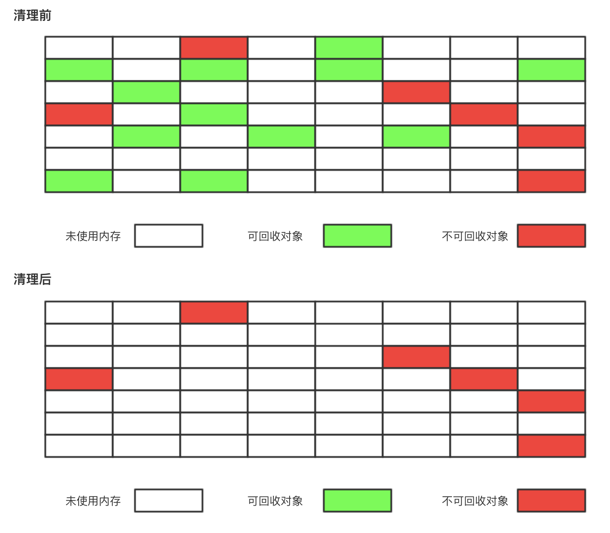
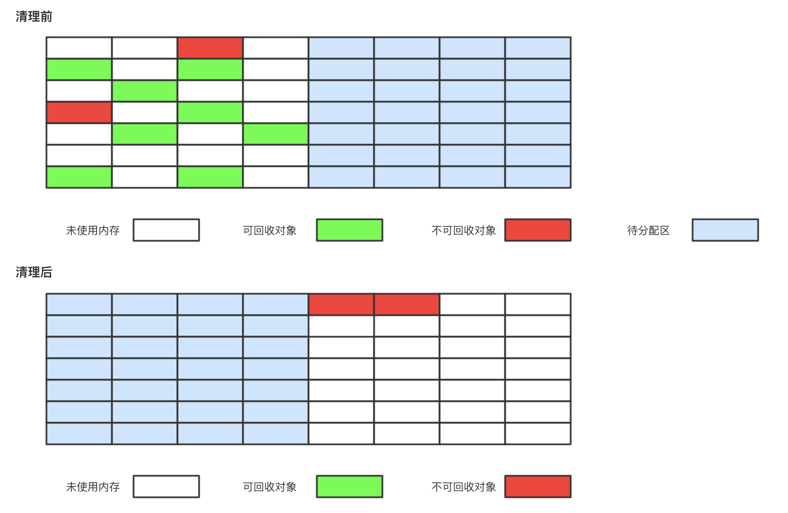
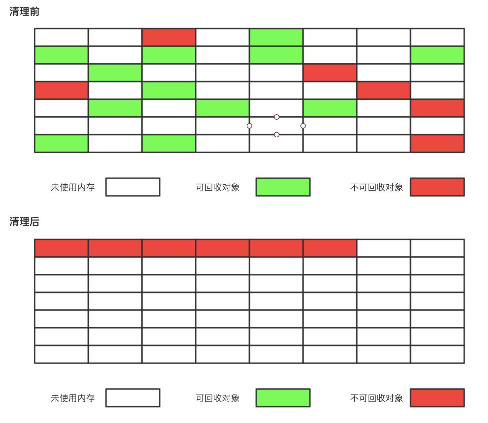
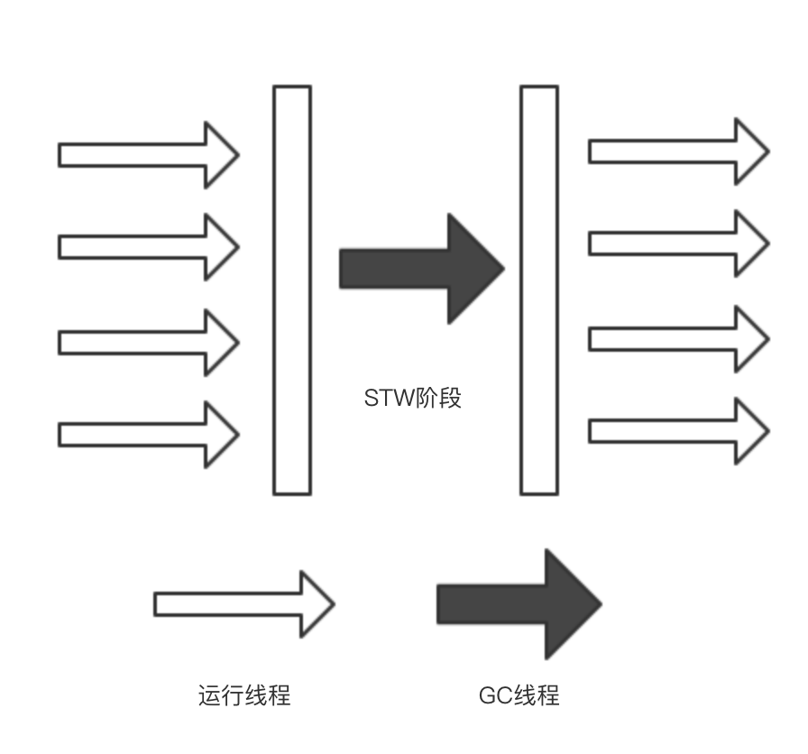
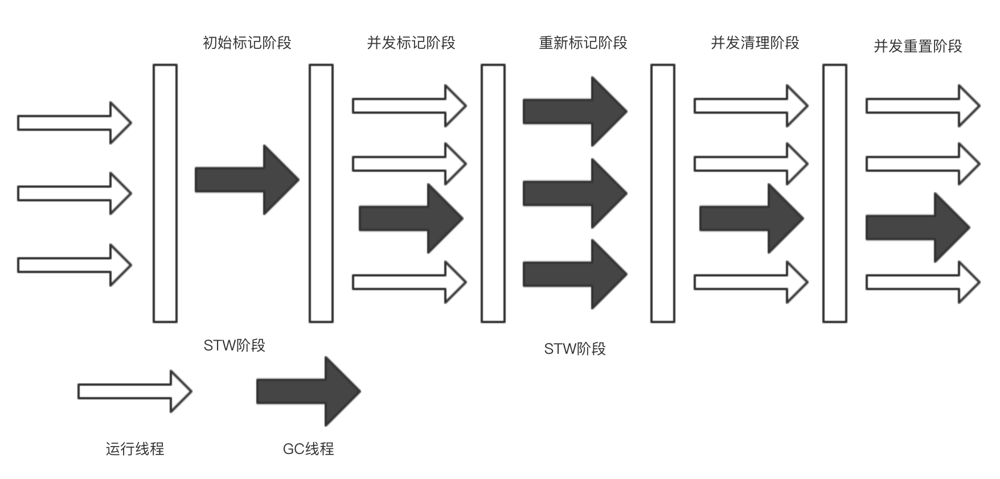
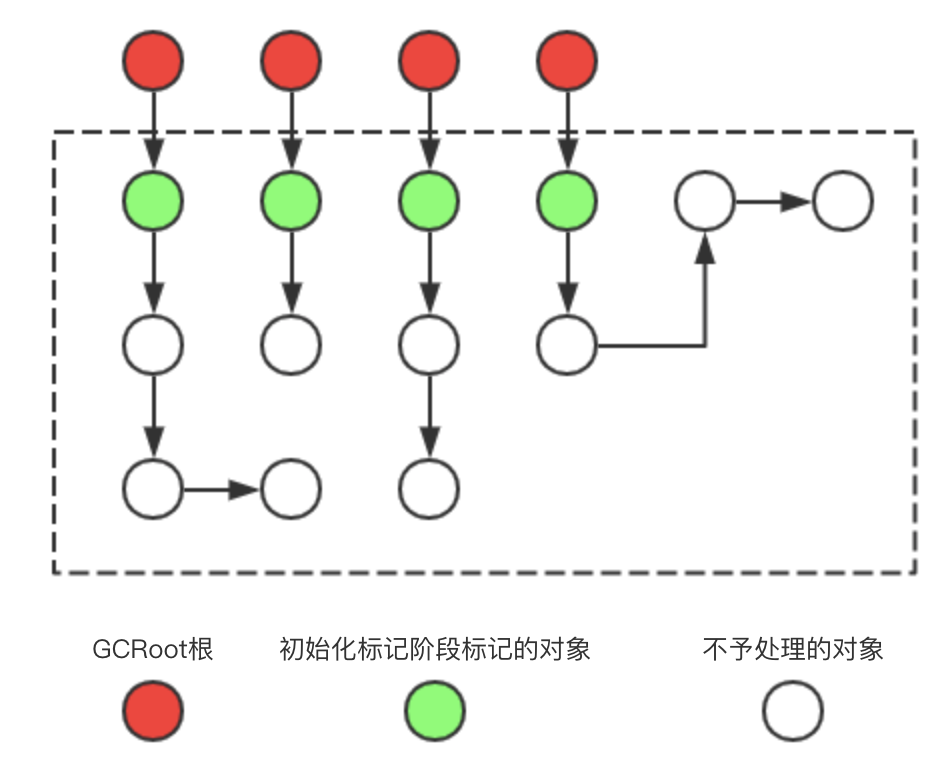

原文连接:https://www.cnblogs.com/cxiaocai/p/11547743.html
接上次JVM虚拟机堆内存模型来继续说，上次我们主要说了什么时候可能把对象直接放在老年代，还有我们的可能性分析，提出GCroot根的概念。这次我们主要来说说垃圾回收所使用的的算法和我们的垃圾回收器，需要了解我们的可达性分析GCroot根是什么，还有我们的动态年龄判断和老年代分配担保机制，还不清楚咋回事的小伙伴可以去我上几篇JVM的博客去看一下，JVM内存模型的几篇博客 https://www.cnblogs.com/cxiaocai/p/11520731.html
垃圾回收算法，主要就三种，标记清除，复制，标记整理。
标记清除：
上图说话。

解释一下，标记清理算法，我们可以视为每一个位置去观察，可以清理就标记，不能清理就放那不动。也可以想象为我们打扫屋子，我们只扔掉我们不想要的物品，其余想留下的东西还是放在原处不动。
这种算法清理缺点是效率并不高，而且会带来大量的空间碎片，我们可以由下面的小方格看到，红色的格子不是连续的，而是分布在不同位置的。这时进来一个大对象，需要多个连续的格子，就可能放不下了。
复制：
不多了直接上图。

和上面相比，我们至少可以看到连续的红格子了，复制算法就是查看每一个小格子，可以回收就回收掉，不行就挪到保留的另一半内存中去，每次只标记整体区域的一半，我们还是拿收拾屋子举例，复制算法就像是，我们把卧室收拾一遍，不要的扔掉，想留下的整齐的放在客厅，下次我们收拾客厅也是如此，每次收拾一半。缺点就是内存利用率低，只能使用一半，还需要保留一半的区域为了来回挪动存活对象。
标记整理：

标记整理是是标记清除的升级版，优点：解决内存碎片问题。缺点：整理阶段，由于移动了可用对象，需要去更新引用。还是收拾屋子的那个例子，我们把没用的物品扔掉，其余物品整齐的摆放起来。
接下来就是和我们回收算法对应的回收器了。
Serial收集器(-XX:+UseSerialGC -XX:+UseSerialOldGC)
Serial（串行）垃圾收集器是最基本、发展历史最悠久的收集器；作用于新生代时采用采用复制算法；Serial Old收集器也就是Serial作用于老年代时采用标记整理算法。
采用单线程手机模式来收集。

ParNew收集器(-XX:+UseParNewGC)
ParNew收集器其实就是Serial收集器的多线程版本，除了使用多线程进行垃圾收集外，其余行为 (控制参数、收集算法、回收策略等等)和Serial收集器完全一样。默认的收集线程数跟cpu核数相同，当然也可以用参数(-XX:ParallelGCThreads)指定收集线程数，但是一般不推荐修改。 并且单核CPU的服务器，优先考虑Serial收集器，甚至由于存在线程交互的开销，效果不一定强于Serial收集器，可能Serial收集器效果更好，parNew新生代采用复制算法，老年代采用标记-整理算法。 建议使用在新生代，后面会说为什么。

Parallel Scavenge收集器(-XX:+UseParallelGC,- XX:+UseParallelOldGC)
Parallel Scavenge 收集器类似于ParNew 收集器，是Server 模式(内存大于2G，2个cpu)下的默认收集器， Parallel Scavenge更加关注于CPU的使用率，可能在回收的过程瞬间CPU使用率提高进行垃圾回收。Parallel Old收集器是Parallel Scavenge收集器的老年代版本。和上面的图一样 ，我就不再贴图了。新生代采用复制算法，老年代采用标记-整理算法。
CMS收集器(-XX:+UseConcMarkSweepGC(old))
相对上面几个收集器来说稍微复杂一些，先看图。

由图来看确实复杂了不少，但是并不是一直处于STW阶段，中间还有并行的时候。我们来看一下每一个阶段都是做什么的。
初始化标记阶段：
这里STW时间非常短，微乎其微的，这里只标记GCRoot根直接引用的对象，不往下层去搜索更多的对象进行标记，效率很高，STW时间很短。

并发标记阶段：
并发标记阶段是最消耗时间的，在上一个阶段只标记GCRoot根的直接引用对象，这个阶段是把所有需要回收的对象都需要标记出来。可能引用很多，所以耗时较大。但是还好，他不会出现STW，不会停掉所有线程为其单一服务。
重新标记阶段：
在上一个相对比庞大的并发标记阶段，并没有STW，可能会产生新的GCRoot根，或者说原有不需要回收的对象现在已经变为垃圾对象了，我们在重新标记阶段再一次来做一下处理，这里又会出现STW现象，相比并发标记阶段时间也是很短的。
并发清理阶段：
恢复我们的正常的线程，开始清理没有标记的对象，这里不会产生STW，在这个阶段再进来的新对象，或者产生对象的变更，CMS是不会继续处理的，会在下一次垃圾回收再来处理这些对象。
并发重置阶段：
清楚所有标记，为下一次垃圾回收做准备。
CMS垃圾收集器步骤比较多，但是我们可以看出明显提高了效率，中间至少不是持续的STW的。但是也有CMS的弊端的，并发标记阶段和并发清理阶段很容易和我们正常的线程抢占CPU的。再就是他的算法只是标记清理，并没有整理内存碎片，但可以调配参数做到整理碎片的目的。最坑的问题来了，就是我们在并发标记阶段，可能进来新的对象，本来我们老年代就快满了，才进行的垃圾收回，这时这些对象过大过多，会再次执行CMS的垃圾回收，造成concurrent mode failure，这时会变更为Serial收集器，产生较长的STW时间。
CMS相关参数：
1. -XX:+UseConcMarkSweepGC:启用cms垃圾回收器
2. -XX:ConcGCThreads:并发的GC线程数目
3. -XX:+UseCMSCompactAtFullCollection:FullGC之后做压缩整理(减少碎片)
4. -XX:CMSFullGCsBeforeCompaction:多少次FullGC之后压缩一次，默认是0，代表每次
FullGC后都会压缩一次，依赖上面的参数，必须配置-XX:+UseCMSCompactAtFullCollection才生效
5. -XX:CMSInitiatingOccupancyFraction: 当老年代使用达到该比例时会触发FullGC(默认
是92，这是百分比)，可能出现JVM自我优化变更的现象，不是很稳定
6. -XX:+UseCMSInitiatingOccupancyOnly:只使用设定的回收阈值(-XX:CMSInitiatingOccupancyFraction设定的值)，如果不指定，JVM仅在第一次使用设定值，后续则会自动调整，比上面的-XX:CMSInitiatingOccupancyFraction稳定很多
7. -XX:+CMSScavengeBeforeRemark:在CMS GC前启动一次minor gc，目的在于减少
老年代对年轻代的引用，降低CMS GC的标记阶段时的开销，一般CMS的GC耗时 80%都在重新标记阶段
今天先说这么多 ，还有一个G1收集器没有说，下次博客会说G1收集器，和常见的调优方式，有时间我再整理一份常用的命令。
看起来真的吃力的话，建议先看一下我前几篇JVM相关的博客，JVM内存模型的几篇博客 https://www.cnblogs.com/cxiaocai/p/11520731.html
最进弄了一个公众号，小菜技术，欢迎大家的加入